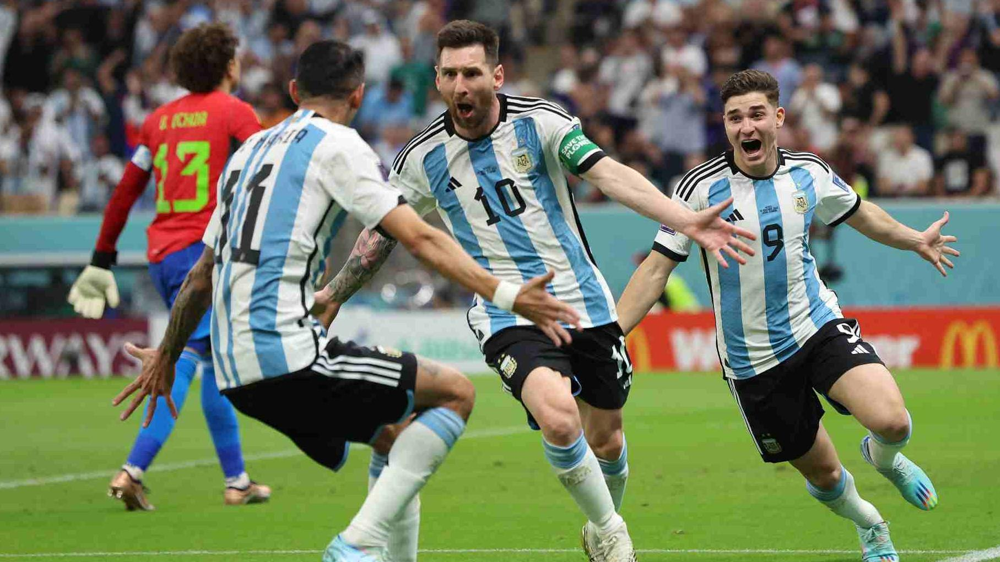
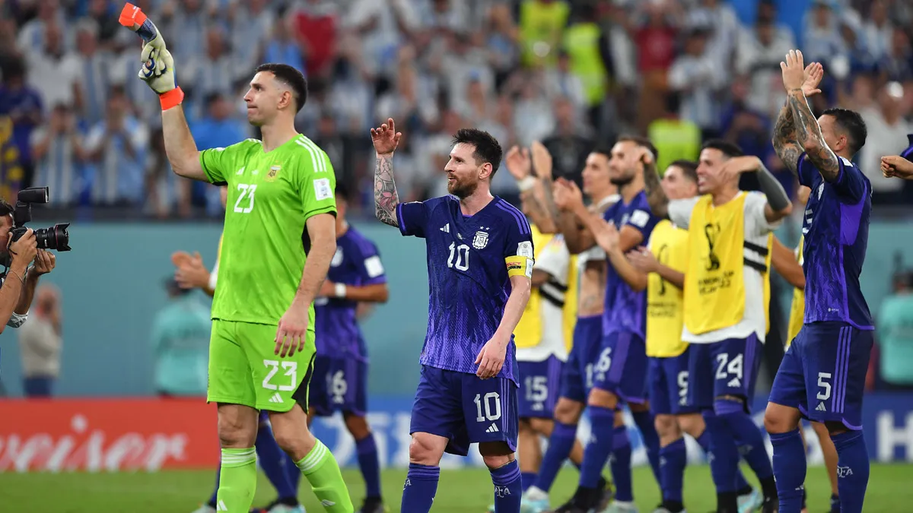
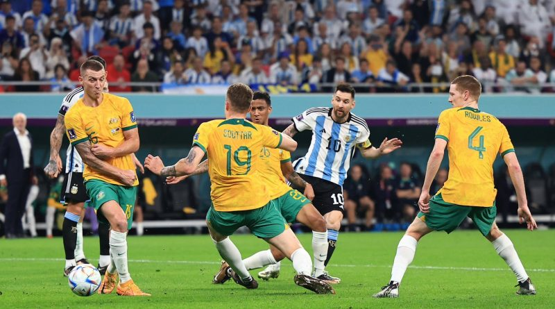
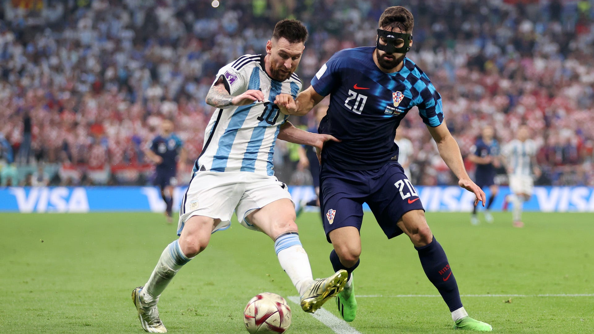
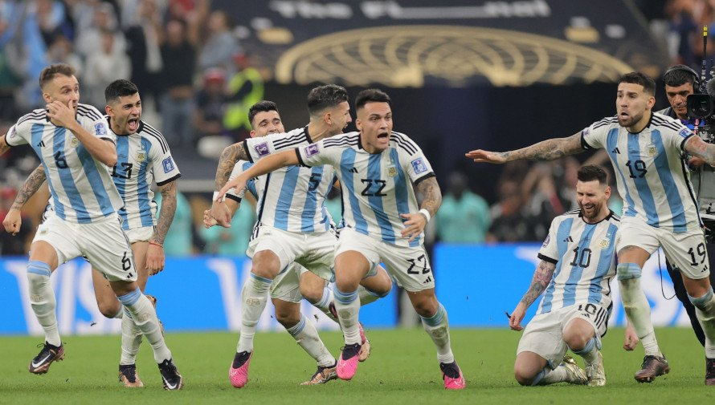

REVIVI EL EMOTIVO RECORRIDO DE LA SELECCION ARGENTINA CAMPEON DEL MUNDO
La selección de Argentina fue uno de los 32 equipos participantes en la Copa Mundial de Fútbol de 2022, en la cual se consagró campeón. El torneo se llevó a cabo del 20 de noviembre al 18 de diciembre en Catar.Fue la decimoctava participación de Argentina, que formó parte del Grupo C, junto a Arabia Saudita, México y Polonia.
ARGENTINA 1 ARABIA SAUDITA 2

1-0, 9': Messi, 1-1, 47': Saleh, 1-2, 52': Salem Al Dawsari
ARABIA SAUDITA DIO EL BATACAZO Y VENCIÓ A ARGENTINA Pese a estar en ventaja en el primer tiempo y merecer una diferencia mayor, Argentina padeció en el complemento la levantada de su rival y sufrió una dura derrota en su presentación en el Grupo C de la Copa Mundial de la FIFA Catar 2022.
ARGENTINA 2 MEXICO 0
Messi 63',Enzo Fernández 86'
Argentina revivió sus esperanzas en la Copa del Mundo con una victoria de 2-0 sobre México. Con la victoria, el equipo albiceleste se sacó un peso enorme de encima, y así lo destacó el capitán en diálogo con los medios al término del encuentro: “Era un partido complicado para levantarnos, porque México juega bien. El primer tiempo lo jugamos con intensidad y en el segundo nos calmamos y volvimos a ser nosotros. Había que ganar para acomodarnos. Queda una final y no podemos errar”, dijo Messi.
ARGENTINA 2 POLONIA 0
Alexis Mac Allister 45',Julián Álvarez 66
Argentina le ganó por 2-0 a Polonia y se clasificó a octavos de final del Mundial de Qatar 2022 como primero del Grupo C. En la próxima ronda se medirá ante Australia, que finalizó segundo en la zona D.
OCTAVOS DE FINAL
ARGENTINA 2 AUSTRALIA 0
Messi 34',Julián Álvarez 56' Enzo Fernández 76' (pp)
Al ritmo acompasado de su hinchada, entre inquietudes por el arreón final australiano, Argentina se impuso a Australia y está en cuartos del Mundial,el lugar que se ha ganado a base de ser más Argentina que nunca.
CUARTOS DE FINAL
ARGENTINA 2(4) PAISES BAJOS 2(3)

Wout Weghorst (83', 90'+11')Denzel Dumfries (120')Nahuel Molina (35')Lionel Messi (73' Pen)
Argentina sufrió, pero avanzó a semifinales. El equipo conducido por Lionel Scaloni se hizo fuerte desde los 12 pasos y dejó en el camino a Países Bajos para meterse entre los cuatro mejores equipos del Mundial Qatar 2022.
SEMI FINAL
ARGENTINA 3 CROACIA 0
Lionel Messi (34' Pen)Julián Álvarez (39', 69')
El equipo dirigido por Lionel Scaloni goleó al elenco balcánico por 3 a 0 y se metió en la final de la Copa del Mundo, donde enfrentará al ganador del duelo entre Francia y Marruecos. En un partido muy disputado en la mitad de la cancha, el conjunto de Lionel Scaloni sacó ventaja con un penal bien ejecutado por Lionel Messi a los 34′ del primer tiempo. Julián Álvarez marcó dos goles: el 2-0 con una guapeada y en el segundo tiempo amplió la diferencia.
FINAL
ARGENTINA 3(4) FRANCIA 3(2)
Lionel Messi (23' Pen, 108')Ángel Di María (36')Kylian Mbappé 80' Pen, 81', 118' Pen
El equipo de Scaloni pasó por todos los estados de ánimo en un partido que terminó 3-3 tras 120 minutos inolvidables: ganaba con los goles de Messi y Di María; en una ráfaga empató Mbappé con dos tantos; en la prórroga volvieron a marcar Messi y Mbappé, pero en los tiros desde los doce pasos se impuso la selección, que celebra en Qatar.